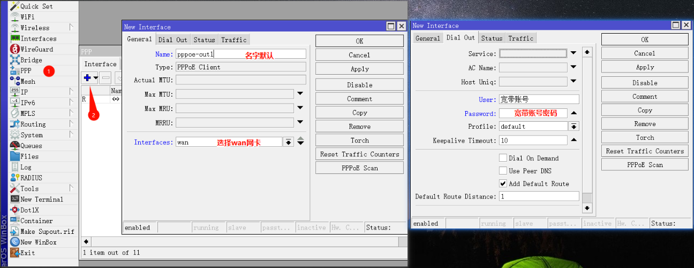
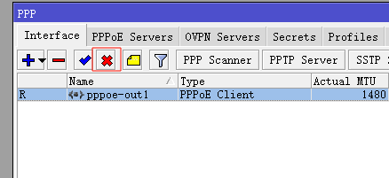
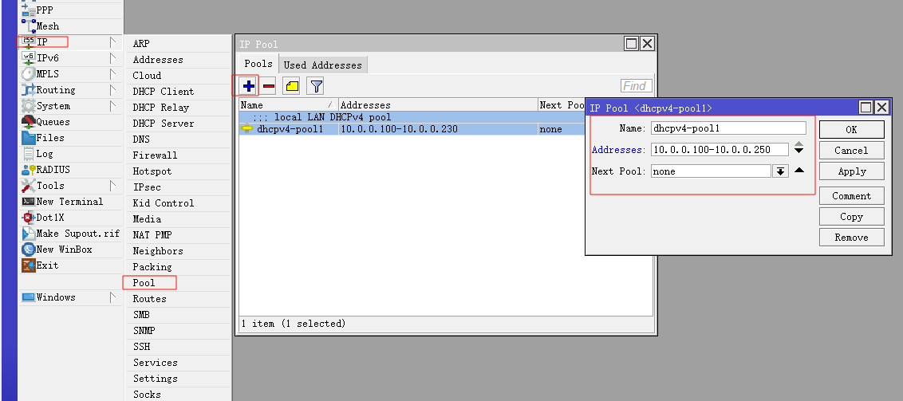
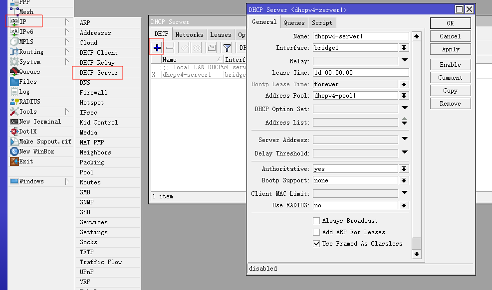
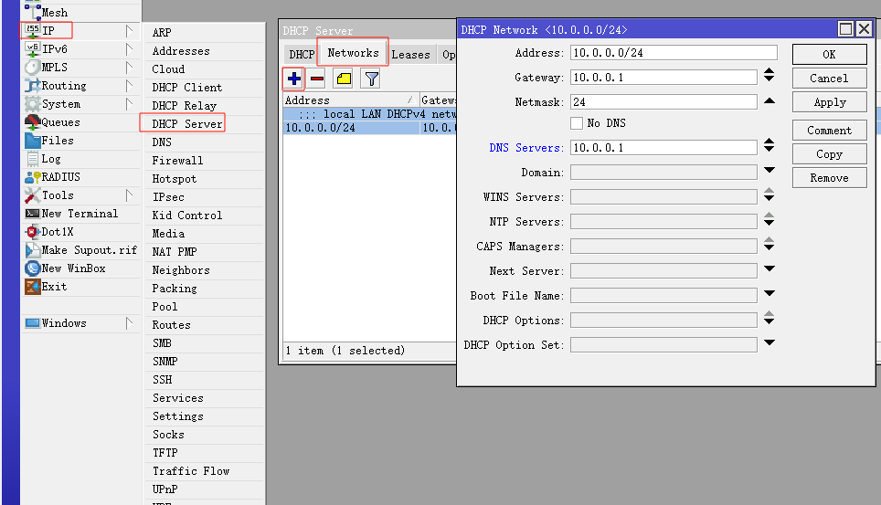
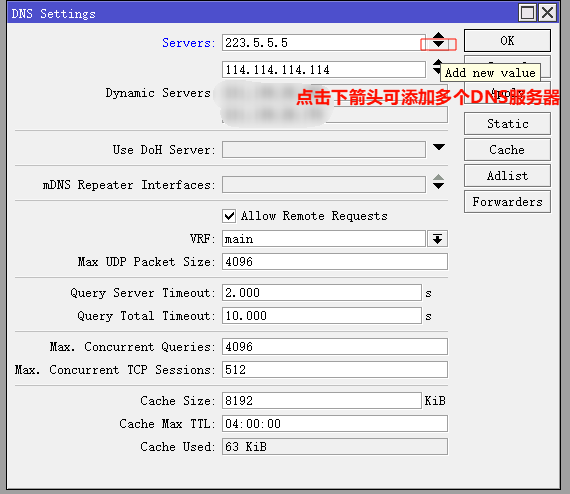
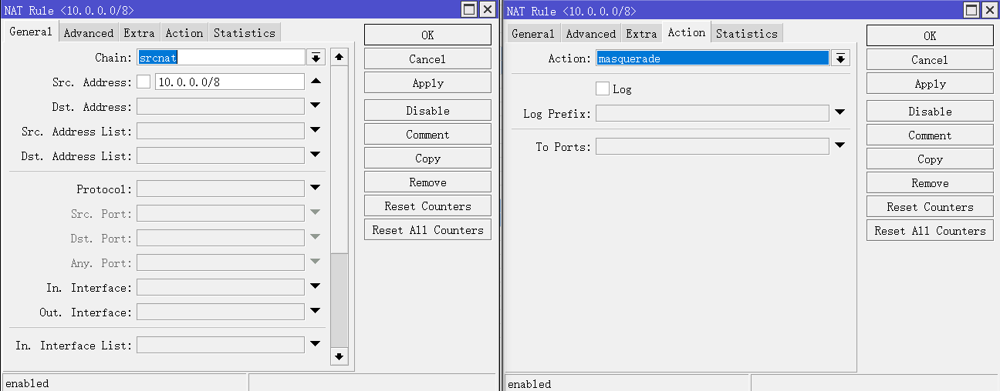
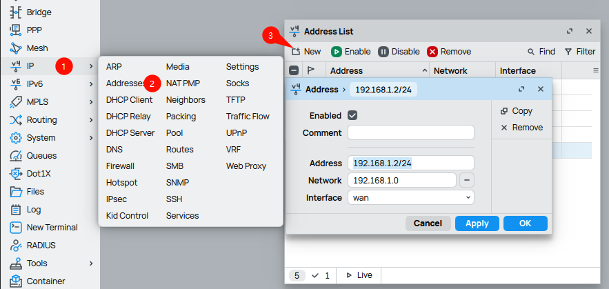

本文介绍RouterOS拨号、配置DHCP服务器、配置DNS、开启IPv4防火墙等通网的基础配置。桥接接口bridge1、拨号接口pppoe-out1名称若不同则自行替换
1. PPPoE 拨号
手动配置pppoe-out1接口拨号，User填入宽带账号，Password填入宽带密码。如果不使用运营商提供的DNS可不勾选User Peed DNS。

注：接口前出现“R”代表拨号成功。拨号成功后建议先禁用，待防火墙配置完毕后再开启!
2. DHCP 服务器
配置DHCP服务器，DHCP IP范围为10.0.0.100-10.0.0.250，网关和DNS默认为ROS。如果希望全局配置透明代理，dns-server可配置为mosdns
/ip pool add name=dhcpv4-pool1 ranges=10.0.0.100-10.0.0.250
/ip dhcp-server add name=dhcpv4-server1 interface=bridge1 address-pool=dhcpv4-pool1 lease-time=1d
/ip dhcp-server network add address=10.0.0.0/24 gateway=10.0.0.1 dns-server=10.0.0.1


3. DNS
配置DNS，即ROS的上游DNS，先设置223.5.5.5，也可自定义填入运营商分配DNS服务器等
/ip dns set servers=223.5.5.5 allow-remote-requests=yes max-concurrent-queries=4096 max-concurrent-tcp-sessions=512 cache-size=8192 cache-max-ttl=04:00:00
4. 源地址伪装
配置源地址伪装，建议不做接口限制，若后期采用fakeip方案，再加上“排除代理IP列表的操作”
/ip firewall nat add action=masquerade chain=srcnat comment="defconf: masquerade IPv4"
至此打开pppoe接口即可通网，但建议继续配置完防火墙再通网！5. 访问光猫
如果需要访问光猫，则为wan口分配一个光猫同网段的IP地址。一般为192.168.1.0/24网段。注意interface为物理接口wan，不是拨号口

防火墙源于@Ron佬2月10日版本，感谢感谢~
6. IPv4 防火墙
添加防火墙规则 注：5391是Winbox登陆端口，可以加上想隐藏的端口。如果在NAT有映射，端口无法隐藏。 注：UDP协议 dst-port=!53,853,5391 可以加上wireguard端口，防止触发PSD，造成IP被Block。
/ip firewall filter add action=accept chain=forward in-interface=bridge1
/ip firewall filter add action=accept chain=input in-interface=bridge1
/ip firewall filter add action=accept chain=forward connection-state=established,related,untracked
/ip firewall filter add action=accept chain=input connection-state=established,related
/ip firewall filter add action=drop chain=input src-address-list=BlockIP in-interface=pppoe-out1
/ip firewall filter add action=drop chain=input connection-state=invalid in-interface=pppoe-out1
/ip firewall filter add action=drop chain=input protocol=icmp in-interface=pppoe-out1
/ip firewall filter add action=drop chain=input protocol=tcp dst-port=53,5391 in-interface=pppoe-out1
/ip firewall filter add action=drop chain=input protocol=udp dst-port=53,5391 in-interface=pppoe-out1
/ip firewall filter add action=add-src-to-address-list chain=input address-list=BlockIP address-list-timeout=1w protocol=tcp dst-port=!53,853,5391 tcp-flags=rst in-interface=pppoe-out1 psd=21,5s,3,1
/ip firewall filter add action=add-src-to-address-list chain=input address-list=BlockIP address-list-timeout=1w protocol=tcp dst-port=!53,853,5391 tcp-flags=syn in-interface=pppoe-out1 psd=21,5s,3,1
/ip firewall filter add action=add-src-to-address-list chain=input address-list=BlockIP address-list-timeout=1w protocol=udp dst-port=!53,853,5391 in-interface=pppoe-out1 psd=21,5s,3,1
/ip firewall filter add action=drop chain=input src-address-list=BlockIP7. TCP MSS
/ip firewall mangle add action=change-mss chain=forward protocol=tcp tcp-flags=syn new-mss=clamp-to-pmtu passthrough=yes
/ip firewall mangle add action=change-mss chain=output protocol=tcp tcp-flags=syn new-mss=clamp-to-pmtu passthrough=yes8. 关闭非必要服务端口
/ip firewall service-port disable ftp
/ip firewall service-port disable irc
/ip firewall service-port disable pptp
/ip firewall service-port disable rtsp
/ip firewall service-port disable sip
/ip firewall service-port disable tftp注：防火墙已配置完毕，可打开pppoe接口开始网上冲浪